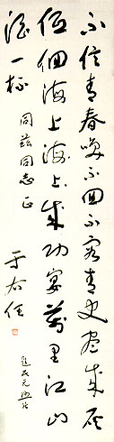

義助慰安婦
—— 李敖百件珍藏義賣藝術品（第14件）
品 名： A14. 于右任「不容青史盡成灰」詩 預估價： 30 萬 成交價： 50 萬 說 明： 本件作品是革命元老于右任寫給蕭同茲（曾任中央社社長三十年）的一首詩。于右任來台後曾任監察院院長，並且寫了很多的墨寶，部份流傳到日本，深受日人欣賞。這首詩收錄在《右任墨存》中（內容略有出入），為一首名詩；第三句「低徊海上成功宴」的「海上」重覆寫了一遍（以黑點表示），似「變體郵票」，為一頗饒趣味的作品。（近日，座落於台北市仁愛路與敦化南路口的于右任銅像即將面臨被搬遷的命運，因為民進黨大員疏於歷史，竟不知他是誰了。）
